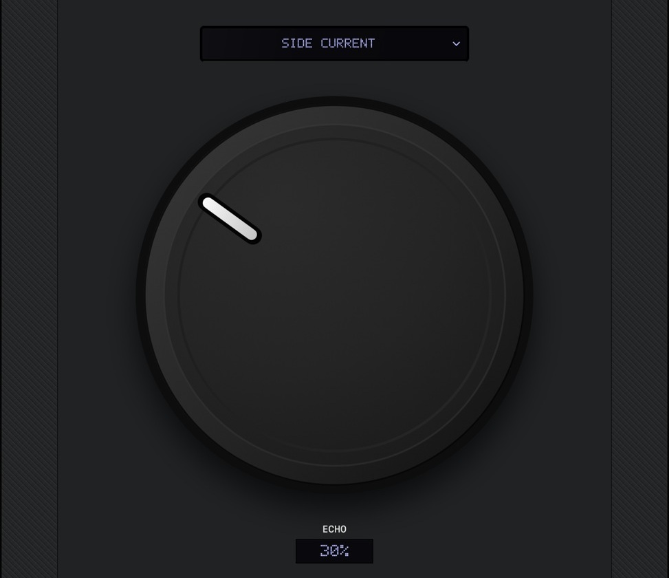
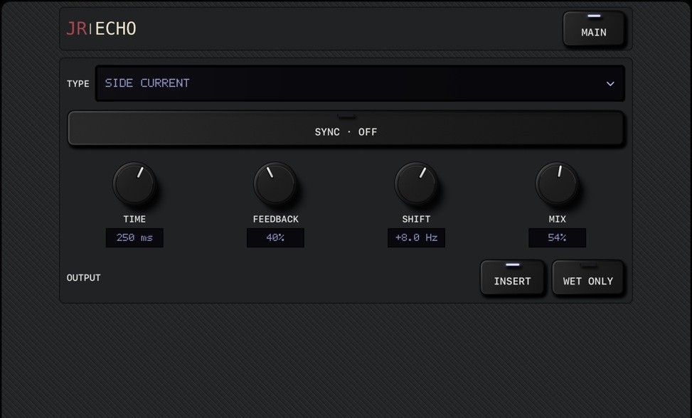

Shift
Side Current · Low Tide
Send the repeats upward or downward as they cycle through the feedback path.
FREQUENCY-SHIFTING ECHO / iPHONE · iPAD · AUv3
Shift the frequencies inside the feedback path so each repeat drifts a little further. Leave SHIFT at 0 Hz for an unshifted echo, or let the two stereo sides move in different directions.
APP STORE LAUNCH IN PREPARATION

SOUND DEMO
Listen to the stereo movement and the way the repeats spread behind the keys. Both clips use the same keys phrase and input level.
EFFECT TYPES
SHIFT is measured in hertz. A small move changes the feel of the feedback before the effect becomes obvious.
Side Current · Low Tide
Send the repeats upward or downward as they cycle through the feedback path.
Still Water · Twin Orbit
Use short double tracking or let the left and right repeats drift in opposite directions.
Glint Trail · Dusk Signal
Add an extra tap or let the echo recede while the dry source is active.
EDIT / FOUR CONTROLS

Tap or hold the active type name to browse groups, or drag it to step through types. Each type recalls its edit settings, and MIX keeps its current value as you change types.
STANDALONE / AUv3
Open the app and audition the effect on DRUMS or KEYS. Start with the main dial, then open EDIT to refine it.
Find Jazzy Rhythmer: JR ECHO under audio effects in an AUv3 host. Set Wet Only for a send, or use Insert to blend the repeats over the source. SYNC follows host tempo when available.